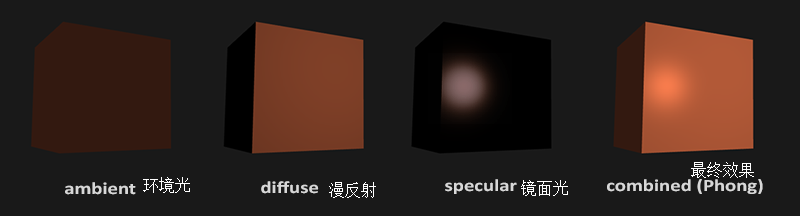
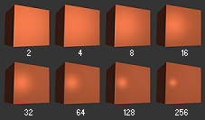
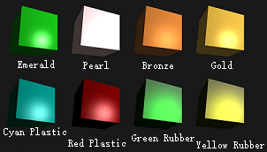
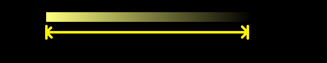

mesh_buf_t mb("res/cube.ve","res/cube.in",gle.draw_never_chg),
lt_mb("res/cube.ve","res/cube.in",gle.draw_never_chg);
shader_t lt_sd("res/eg1l.vs","res/eg1l.fs"),
sd("res/eg1.vs","res/eg1.fs");
由于我们暂时不用纹理了，我们删掉纹理相关内容，同时使用以下的极简的着色器：eg1.vs eg1l.vs 均为：
#version 330 core
layout (location = 0) in vec3 v_pos;
uniform mat4 model;
uniform mat4 view;
uniform mat4 proj;
void main(){
gl_Position=proj*view*model*vec4(v_pos.x,v_pos.y,v_pos.z,1.0);
}
物体片段着色器 eg1.fs
#version 330 core
out vec4 fcol;
void main(){
fcol=vec4(1.0,0.5,0.31,1.0); // orange
}
光源片段着色器 eg1l.fs
#version 330 core
out vec4 fcol;
void main(){
fcol=vec4(1.0); // white
}
之后加上鼠标、键盘控制:gl.mouse();
mousectrl_t g_mouse;
if(gl.kpr('W')) cam.movef(tim.dis);
if(gl.kpr('A')) cam.mover(-tim.dis);
if(gl.kpr('S')) cam.movef(-tim.dis);
if(gl.kpr('D')) cam.mover(tim.dis);
if(gl.kpr(' ')) cam.moveu(tim.dis); // press space to fly higher
if(gl.kpr(GLFW_KEY_LEFT_SHIFT)) cam.moveu(-tim.dis); // press shift to fly lower
定义光源位置。vec3 lt_pos(1.2f,1.0f,2.0f);
每帧绑定物体的网格缓冲、着色器，更新uniform，渲染，然后同样绑定另一个：
// bind object
mb.bind();
sd.use();
// draw object
sd.setm4("model",mat4(1.0f)); // not any trans
sd.setm4("view",cam.view());
sd.setm4("proj",proj);
gl.triangle(0,12);
// bind light
lt_mb.bind();
lt_sd.use();
// draw light
trans_t tr;
tr.trans(lt_pos); // move to the position
tr.scale(0.2f); // scale to be smaller
lt_sd.setm4("model",tr.matr());
lt_sd.setm4("view",cam.view());
lt_sd.setm4("proj",proj);
gl.triangle(0,12);
eg1。

1. 环境光。在真实世界里，光线可以反射，甚至可以来回反射。完全模拟这个过程连最好的显卡也做不到。为了节省性能，我们使用一个环境光，来代表 这些多次反射的光线 照亮的一点点亮度。#include<phong.fsh>
然后声明一个材质对象：material_t mate;
它的成员有：vec3 mate.diff：
物体本身的颜色即漫反射光的颜色，也是漫反射的强度（在红绿蓝三个通道上的）。vec3 mate.spec：
物体高光的强度，也是高光的颜色。float mate.shini：
物体的反光度。（高光的范围，如图）

下图展示了各种材质的效果：
img from here / LearnOpenGLlight_t lt;
光源有4种类型，由它的成员 lt.type 决定。
首先介绍点光源（1）。

Data From Here.vec4 lighting(法向量,视线（相机位置-片段位置）,mate,lt);
如果你不理解这些，不要着急。我将会在下面的例题中给出用法。
material_t mate;
然后思考一下怎样给它传数据。我们当然可以用 uniform，但是，我们常常需要在着色器中修改其属性，但 uniform 不能直接修改。因此，我们额外创建一个 uniform，赋值给原材质，就能修改那个作为普通变量的原材质了：uniform material_t u_mate;
mate=u_mate;
// 可以修改mate
下一个问题，怎么传结构体 uniform ？有两种方法：
sd.set*("结构体.成员",***);
sd.set*(sdu("结构体","成员"),***);
于是我们传入：
sd.set3f("u_mate.diff",vec3(1.0f,0.5f,0.31f));// orange
sd.set3f("u_mate.spec",vec3(1.0f,1.0f,1.0f)); // bright white
sd.setf("u_mate.shini", 32.0f);
light_t lt;uniform light_t u_lt;lt=u_lt;
接下来就是把它传到着色器里了。不同的是，在C++侧也有一个相同的 light_t，我们创建一个：
light_t lt;
lt.type=1;
lt.amb=vec3(0.2f,0.2f,0.2f); // dark white / gray
lt.diff=vec3(0.5f,0.5f,0.5f);// mid white / gray
lt.spec=vec3(1.0f,1.0f,1.0f);// bright white
lt.kc=1.0f;
lt.kl=0.09f;
lt.kq=0.032f;
然后传数据：sd.setlight("u_lt",lt);
别忘了，lt.dir 还要自己算：（在片段着色器中）
lt.dir=片段位置-光源位置;
那么我们接下来的任务就是获取这两个位置了。out vec3 f_pos;
f_pos=vec3(model*vec4(v_pos.xyz,1.0));
片段着色器：in vec3 f_pos;
uniform vec3 lt_pos;
sd.set3f("lt_pos",lt_pos);
因此
lt.dir=f_pos-lt_pos;
mb的顶点数据：res/cube_normal.ve。
（数据布局：3顶点坐标，3法向量，2纹理坐标）layout (location = 1) in vec3 v_norm;
out vec3 t_norm;
对法向量的变换，常常使用另一个矩阵：法线矩阵。在这里没有任何变化，故传入单位矩阵：
uniform mat3 m_norm;
sd.setm3("m_norm",mat3(1.0f));
t_norm=m_norm*v_norm;
最后在片段着色器中接收：
in vec3 t_norm;
uniform vec3 cam_pos;sd.set3f("cam_pos",cam.pos);
fcol=lighting(t_norm,cam_pos-f_pos,mate,lt);
x=radius*cos(time),z=radius*sin(time)
答案red=sin(2*time)
green=sin(0.7*time)
blue=sin(1.3*time)
答案